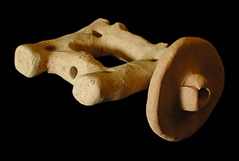
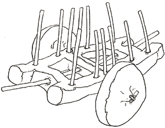

How do we know?Many small carts made of clay have been found at Harappan sites. Archaeologists believe that they were probably toys for children. Since no full-sized carts have ever been found, these small toys give us an idea of what real carts might have looked like in a Harappan town. 
Toy cart This is part of a toy cart found at Mohenjo-daro. When it was complete, it probably would have looked like this drawing. 
|